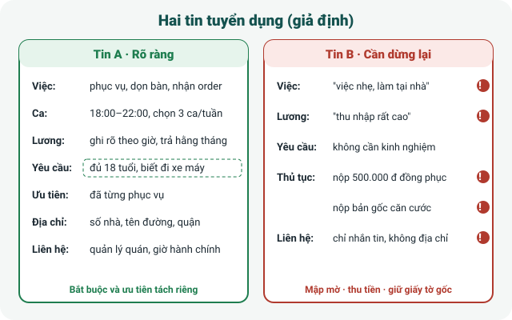

K7 · Tự học và phát triển nghề nghiệp › Bậc 2 Bắt đầu
Đọc tin tuyển dụng làm thêm, thực tập để chọn đúng và tránh bẫy
Bài này làm Tờ 2: Phiếu đọc tin tuyển dụng trong Hồ sơ sẵn sàng đi làm. Mẫu in.
1. Mục tiêu
- Tách yêu cầu bắt buộc và ưu tiên trong một tin tuyển dụng, rồi chấm mức phù hợp của mình.
- Nhận ra 3 dấu hiệu cần dừng lại: thông tin mập mờ, thu tiền, giữ giấy tờ gốc.
2. Khởi động truy xuất
- Bản đồ ba vòng gồm những vòng nào?
- Kể 2 kiểu phép thử nhỏ để thử một hướng nghề.
Đáp án
- Thích làm; làm được, có bằng chứng; điều kiện thật.
- Hỏi chuyện người làm nghề, làm thử, học thử, làm sản phẩm nhỏ.
Xem lại: Hiểu mình để chọn hướng.
3. Giải thích
Một tin tuyển dụng tốt trả lời được 5 câu: làm gì, ở đâu, khi nào, được trả thế nào, liên hệ ai. Thiếu câu nào, bạn ghi lại để hỏi.
Bước 1. Tách yêu cầu. Đọc phần "Yêu cầu" và chia hai cột:
- Bắt buộc: thiếu là không được nhận. Ví dụ: đủ tuổi, làm được ca tối.
- Ưu tiên: có thì tốt hơn. Thường đi kèm chữ "ưu tiên", "là lợi thế".
Thiếu vài điều ưu tiên, bạn vẫn nên nộp.
Bước 2. Chấm mức phù hợp. Mỗi yêu cầu bắt buộc, ghi Có hoặc Chưa. Đáp ứng đủ bắt buộc thì nộp. Thiếu một điều nhỏ, có thể hỏi trước.
Bước 3. Kiểm tra dấu hiệu cần dừng lại.

Ba dấu hiệu cần dừng lại
- Lương rất cao nhưng không nói rõ việc.
- Đòi nộp tiền: phí hồ sơ, đồng phục, đặt cọc.
- Đòi giữ bản gốc căn cước, bằng cấp.
- Hỏi rõ việc làm hằng ngày, ca, cách trả lương.
- Không nộp tiền, hỏi lại bằng văn bản.
- Chỉ đưa bản sao, giữ bản gốc.
Hai dấu hiệu sau có căn cứ pháp luật. Bộ luật Lao động cấm người sử dụng lao động giữ bản chính giấy tờ tùy thân, văn bằng, chứng chỉ. Luật cũng cấm buộc người lao động bảo đảm bằng tiền hoặc tài sản (Điều 17). Hai bên phải cung cấp thông tin trung thực khi giao kết hợp đồng (Điều 16).
Bạn chưa đủ 18 tuổi thì có thêm quy định riêng. Hãy đi cùng người nhà khi đến chỗ tuyển lần đầu.
Căn cứ: Bộ luật Lao động 2019, theo văn bản hợp nhất 18/VBHN-VPQH ngày 12/02/2026, Điều 16, 17, 143. Tra cứu 14/11/2026. Luật sửa đổi Bộ luật Lao động đang được Quốc hội xem xét, chưa thông qua. Thông tin này không thay thế tư vấn pháp lý.
4. Ví dụ tại nơi làm việc Việt Nam
Tình huống giả định. Mai, sinh viên năm hai ở Đà Nẵng, đọc tin: "Tuyển thu ngân bán thời gian, siêu thị mini. Ca 17:00–22:00. Yêu cầu: đủ 18 tuổi, cẩn thận, làm được cuối tuần. Ưu tiên: biết dùng máy POS. Lương theo giờ, trả ngày 5 hằng tháng."
Mai làm Phiếu đọc tin:
| Yêu cầu | Loại | Mai |
|---|---|---|
| Đủ 18 tuổi | Bắt buộc | Có |
| Cẩn thận | Bắt buộc | Có (thủ quỹ lớp 1 năm) |
| Làm được cuối tuần | Bắt buộc | Có |
| Biết máy POS | Ưu tiên | Chưa |
Tin trả lời đủ 5 câu, trừ địa chỉ cụ thể. Không có dấu hiệu dừng lại. Mai nộp và ghi câu cần hỏi: "Siêu thị ở địa chỉ nào? Có đào tạo dùng máy POS không?"
Vì sao cách này tốt: Mai không bỏ qua tin chỉ vì thiếu một điều ưu tiên. Mai cũng có sẵn câu hỏi cho buổi phỏng vấn.
5. Thực hành
Tình huống giả định. Tin trên mạng xã hội: "Tuyển cộng tác viên nhập liệu tại nhà. Thu nhập 15–20 triệu/tháng, không cần kinh nghiệm. Đăng ký nhanh, nộp 300.000 đ phí kích hoạt tài khoản. Nhắn tin để nhận việc."
Làm Phiếu đọc tin: tin trả lời được câu nào trong 5 câu? Có dấu hiệu dừng lại nào? Bạn sẽ làm gì?
Gợi ý 1
Tìm trong tin: làm gì cụ thể? Ở đâu? Ai trả lương? Liên hệ ai, có địa chỉ không?
Gợi ý 2
So với 3 dấu hiệu: lương cao bất thường, đòi nộp tiền, giữ giấy tờ.
Lời giải mẫu
- 5 câu: chỉ có "làm gì" rất chung chung. Không có nơi làm, người trả lương, cách trả, người liên hệ có tên.
- Dấu hiệu dừng lại: lương rất cao với việc không cần kinh nghiệm; đòi nộp 300.000 đ.
- Việc nên làm: không nộp tiền, không gửi ảnh giấy tờ. Bỏ qua tin này. Nếu muốn, báo cáo bài đăng với nền tảng mạng xã hội.
(Tin là giả định để minh họa.)
6. Tự kiểm tra
Chọn đáp án. Mỗi lựa chọn đều có giải thích.
Câu 1. Tin tuyển dụng ghi: "Ưu tiên ứng viên biết tiếng Anh giao tiếp". Bạn chưa giỏi tiếng Anh. Bạn nên làm gì?
-
Chưa đúng. Đây là điều ưu tiên, không phải bắt buộc. Bạn vẫn có thể được nhận.
-
Đúng. Đúng. Thiếu vài điều ưu tiên vẫn nên nộp.
-
Chưa đúng. Mỗi dòng CV phải kể được bằng ví dụ thật. Ghi sai sẽ lộ khi phỏng vấn.
Câu 2. Chủ quán nói: "Em gửi bản gốc căn cước để chị giữ, nghỉ việc chị trả." Điều này thế nào?
-
Chưa đúng. Bộ luật Lao động cấm người sử dụng lao động giữ bản chính giấy tờ tùy thân (Điều 17).
-
Đúng. Đúng. Giữ bản chính giấy tờ tùy thân là hành vi bị cấm theo Điều 17.
-
Chưa đúng. Lương cao không làm hành vi bị cấm trở thành hợp pháp.
Câu 3. Tin nào trả lời đủ 5 câu: làm gì, ở đâu, khi nào, trả thế nào, liên hệ ai?
-
Chưa đúng. Không nói làm gì, ở đâu, khi nào. Chỉ liên hệ qua tin nhắn.
-
Đúng. Đúng. Đủ việc, địa chỉ, giờ, cách trả lương và người liên hệ.
-
Chưa đúng. Mập mờ về việc và có dấu hiệu lương cao bất thường.
Câu 4. Một nơi tuyển yêu cầu nộp 200.000 đ "phí giữ chỗ" trước khi đi làm. Bạn nên làm gì?
-
Chưa đúng. Số tiền nhỏ vẫn là biện pháp bảo đảm bằng tiền, bị cấm theo Điều 17.
-
Đúng. Đúng. Đòi nộp tiền là một trong 3 dấu hiệu cần dừng lại.
-
Chưa đúng. Biên nhận không làm yêu cầu này đúng luật. Tốt nhất là không nộp.
7. Phản tư
- Bạn từng thấy tin tuyển dụng nào có dấu hiệu cần dừng lại? Lúc đó bạn đã làm gì?
- Trong các yêu cầu bắt buộc hay gặp ở hướng bạn chọn, bạn còn thiếu điều nào?
8. Áp dụng thật
Trong 7 ngày tới, tìm 3 tin tuyển dụng khớp với 2 hướng ở Tờ 1. Làm Phiếu đọc tin cho cả 3. Chọn 1 tin để viết CV ở bài sau.
Bài về quyền và an toàn khi đi làm thêm, thực tập sẽ có khi luật sửa đổi được thông qua. Theo dõi trang Pháp lý.
9. Siêu dữ liệu
| skill | K7 · Tự học và phát triển nghề nghiệp |
|---|---|
| level | Bậc 2 · Bắt đầu |
| group | N2 |
| framework_map | WEF: Curiosity and lifelong learning; CSfW: 1a Manage career and work life; 1b Work with roles, rights and protocols; NACE: Career and Self-Development (chỉ dẫn chiếu) |
| updated | 2026-11-14 |
Hoàn thành bài
Đánh dấu đã học để site gợi ý lịch ôn sau 1, 3 và 7 ngày. Dữ liệu chỉ lưu trên máy của bạn.
Lịch ôn gợi ý: